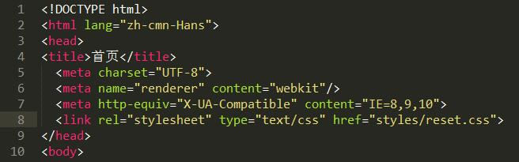
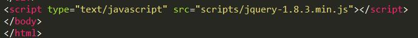

这是任何一个人都可以用的前端小框架，它概述了前端架构的基础布局、样式、动画、JS，撰写该手册的目的就是为了，使小组内各系统项目样式统一、可维护、快速搭建，其价值是给程序节省去拽bootstrap样式剥离的时间。
该框架内容支持PC、touch端使用，内容包括Html、Css、Js、DOM，支持IE8以上所有浏览器，在较老旧的浏览器上可能会导致某些组件表现出的样式有些不同，但是功能是完整的。
1、将所有页面<head>中间加上<link rel="stylesheet" type="text/css" href="styles/reset.css">

2、将所有页面<body>结尾加上<script type="text/javascript" src="scripts/jquery-1.8.3.min.js">

3、将Html、Css、Js代码依次放入相应代码内